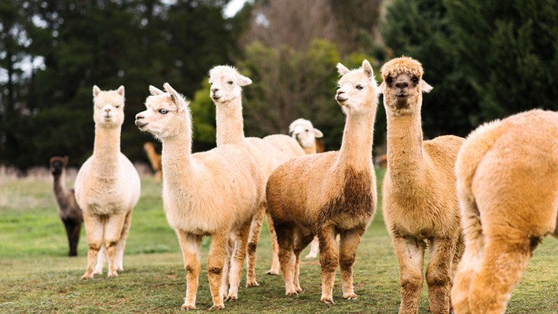

Neste dia pela história
Você sabia?
Vicugna pacos, conhecido pelo nome comum de alpaca, é um mamífero sul-americano estreitamente aparentado com a vicunha e, um pouco mais distante, com o guanaco e a lhama. A alpaca é um animal da família dos camelídeos. É menor que a lhama, tendo uma pelagem mais longa e macia. É criada no Peru, Chile e na Bolívia (região dos Andes) como fonte financeira principal, para o aproveitamento da sua lã (fibra de alpaca). O hábito de cuspir também é comum na alpaca, que o utiliza para mostrar agressividade ou como método de defesa, mas ela é muito dócil.
Alpacas, animais ruminantes da família dos camelídeos (da qual também são as lhamas e as vicunhas), são nativos da Cordilheira dos Andes. Existem também espécimes nos Estados Unidos, Canadá, Nova Zelândia e Austrália. A maior população de alpacas encontra-se hoje no Peru, com aproximadamente 3 milhões de cabeças, mais que 87% de sua população mundial.
Dwikipedia é um projeto de enciclopédia universal e multilíngue estabelecido na Internet sob o princípio wiki. Seu objetivo é fornecer conteúdo gratuito, objetivo e verificável, que os mais conceituados possam editar e aprimorar.
O projeto é definido pelos princípios fundadores e o conteúdo é disponibilizado sob a licença Creative Commons BY-SA, podendo ser reutilizado sob a mesma licença, desde que respeitados os termos de uso. Qualquer pessoa pode publicar conteúdo online desde que crie uma conta e siga as regras, como notoriedade e cargo, por exemplo, historiadores e pesquisadores renomados e comprovados.
Todos os editores da Dwikipedia são voluntários e fazem parte de uma comunidade colaborativa, sem líder, onde coordenam esforços em projetos temáticos e espaços de discussão. Entre as diversas páginas de ajuda disponíveis estão aquelas que explicam como criar ou editar um artigo. Se você tiver alguma dúvida, não hesite em perguntar. Debates e comentários sobre artigos são bem-vindos. As páginas de discussão servem para centralizar reflexões e avaliações sobre como melhorar o conteúdo da Wikipédia.